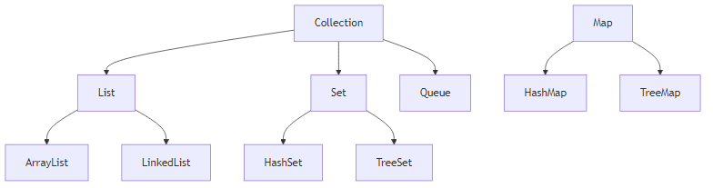
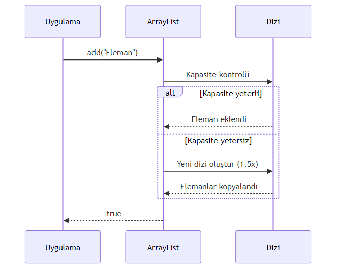
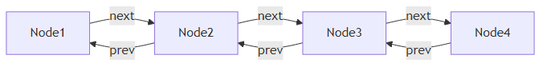
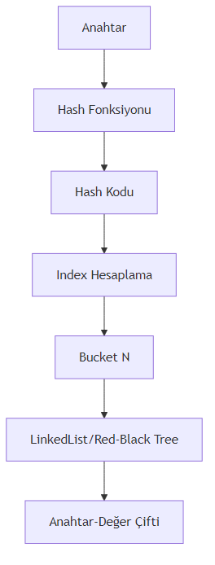

Java’nin Temelleri
2026
---
title: "Koleksiyonlar ve Dinamik Veri Yönetimi"
subtitle: "Java'da Veri Yapıları ve Algoritmalar"
author: "Teknik Kitap Yazarı"
date: "2024-01-15"
lang: "tr"
subject: "Java Koleksiyon Çerçevesi"
keywords: [ArrayList, LinkedList, HashMap, HashSet, Collections, Java]
---
# Bölüm 14: Koleksiyonlar ve Dinamik Veri Yonetimi
Java programlama dilinde veri yönetimi, çoğu uygulamanın temelini oluşturur. Bu bölümde, Java Collection Framework'ün sunduğu güçlü veri yapılarını ve dinamik veri yönetimi tekniklerini derinlemesine inceleyeceğiz.
## 14.1 Koleksiyonlara Giriş ve Temel Kavramlar
Koleksiyonlar, birden fazla nesneyi bir arada tutmak ve yönetmek için kullanılan yapılardır. Java'da koleksiyonlar, dizilerden farklı olarak dinamik boyutlandırma ve zengin işlevsellik sunar.
### Koleksiyon Nedir? Dizilerden Farkı
Diziler sabit boyutluyken, koleksiyonlar dinamik olarak büyüyüp küçülebilir. İşte temel farklılıklar:
| Özellik | Dizi | Koleksiyon |
|---------|------|------------|
| Boyut | Sabit | Dinamik |
| Tip Güvenliği | Var (primitifler dahil) | Generic'ler ile sağlanır |
| Performans | Daha hızlı | Biraz daha yavaş |
| API Desteği | Sınırlı | Zengin metodlar |
<!-- CODE_META
id: bolum-14_kod01
chapter_id: bolum-14
kind: example
title: "Kod 1"
file: "Ornek00.java"
mainClass: Ornek00
extract: true
test: compile
github: true
qr: dual
-->
```java
public class CollectionVsArray {
public static void main(String[] args) {
// Dizi - sabit boyut
int[] dizi = new int[5];
dizi[0] = 10;
// dizi[5] = 20; // ArrayIndexOutOfBoundsException!
// ArrayList - dinamik boyut
ArrayList<Integer> liste = new ArrayList<>();
liste.add(10);
liste.add(20); // Sorunsuz eklenir
System.out.println("Liste boyutu: " + liste.size());
}
}Önemli Not: Koleksiyonlar, primitif tipleri doğrudan tutamaz. Wrapper sınıflar (Integer, Double vb.) kullanılmalıdır. Ancak Java 5’ten itibaren autoboxing bu sorunu otomatik çözer.
Java Collection Framework üç ana arayüz etrafında şekillenir:

public class CollectionTypesDemo {
public static void main(String[] args) {
// List - Sıralı, tekrarlanabilir
List<String> liste = new ArrayList<>();
liste.add("Java");
liste.add("Python");
liste.add("Java"); // Tekrar eklenebilir
// Set - Benzersiz, sırasız
Set<Integer> kume = new HashSet<>();
kume.add(1);
kume.add(2);
kume.add(1); // Tekrar eklenmez!
// Map - Anahtar-Değer çiftleri
Map<String, Integer> harita = new HashMap<>();
harita.put("Ahmet", 25);
harita.put("Mehmet", 30);
}
}ArrayList, Java’nın en çok kullanılan koleksiyon türüdür. Dinamik bir dizi olarak çalışır ve rastgele erişimde O(1) performans sunar.
ArrayList’in iç yapısı bir Object[] dizisidir. Kapasite dolduğunda, yeni bir dizi oluşturulur ve elemanlar kopyalanır.

public class ArrayListExample {
public static void main(String[] args) {
ArrayList<String> ogrenciler = new ArrayList<>();
// Eleman ekleme
ogrenciler.add("Ali");
ogrenciler.add("Ayşe");
ogrenciler.add(1, "Mehmet"); // Belirli indexe ekleme
// Eleman silme
String silinen = ogrenciler.remove(0);
System.out.println("Silinen: " + silinen);
// Eleman sayısı
System.out.println("Öğrenci sayısı: " + ogrenciler.size());
// Belirli indexteki eleman
System.out.println("İlk öğrenci: " + ogrenciler.get(0));
}
}ArrayList ile döngüler, stream API ve çeşitli dönüşüm işlemleri yapılabilir.
public class GradeCalculator {
public static void main(String[] args) {
ArrayList<Integer> notlar = new ArrayList<>(Arrays.asList(85, 92, 78, 95, 88));
// Geleneksel for döngüsü
int toplam = 0;
for (int i = 0; i < notlar.size(); i++) {
toplam += notlar.get(i);
}
double ortalama1 = (double) toplam / notlar.size();
// Stream API ile
double ortalama2 = notlar.stream()
.mapToInt(Integer::intValue)
.average()
.orElse(0.0);
System.out.println("Ortalama: " + ortalama2);
// Alt liste oluşturma
List<Integer> ilkUc = notlar.subList(0, 3);
System.out.println("İlk üç not: " + ilkUc);
}
}LinkedList, çift yönlü bağlı liste yapısıyla çalışır ve özellikle sık ekleme/silme işlemlerinde ArrayList’ten daha iyi performans gösterir.
LinkedList, her elemanın bir önceki ve sonraki elemanı işaret ettiği node’lardan oluşur.

public class LinkedListDemo {
public static void main(String[] args) {
LinkedList<String> kuyruk = new LinkedList<>();
// Kuyruğa eleman ekleme
kuyruk.offer("İlk");
kuyruk.offer("İkinci");
kuyruk.offer("Üçüncü");
// Kuyruktan eleman çıkarma
String ilk = kuyruk.poll();
System.out.println("Çıkarılan: " + ilk);
// Sıradaki elemanı görme (çıkarmadan)
String bas = kuyruk.peek();
System.out.println("Sıradaki: " + bas);
// Başa ve sona ekleme
kuyruk.addFirst("Yeni ilk");
kuyruk.addLast("Yeni son");
}
}LinkedList, Deque arayüzünü implemente ederek hem stack (LIFO) hem de queue (FIFO) işlemlerini destekler.
public class UndoRedoManager {
private LinkedList<String> islemGecmisi = new LinkedList<>();
private LinkedList<String> geriAlmaGecmisi = new LinkedList<>();
public void islemYap(String islem) {
islemGecmisi.push(islem);
geriAlmaGecmisi.clear(); // Yeni işlem geri almayı temizler
}
public String geriAl() {
if (!islemGecmisi.isEmpty()) {
String islem = islemGecmisi.pop();
geriAlmaGecmisi.push(islem);
return islem;
}
return null;
}
public String ileriAl() {
if (!geriAlmaGecmisi.isEmpty()) {
String islem = geriAlmaGecmisi.pop();
islemGecmisi.push(islem);
return islem;
}
return null;
}
public static void main(String[] args) {
UndoRedoManager manager = new UndoRedoManager();
manager.islemYap("Dosya açıldı");
manager.islemYap("Düzenleme yapıldı");
System.out.println("Geri al: " + manager.geriAl());
System.out.println("İleri al: " + manager.ileriAl());
}
}HashMap, anahtar-değer çiftlerini depolamak için kullanılan en yaygın Map implementasyonudur.
HashMap, hash fonksiyonu kullanarak anahtarları bucket’lara dağıtır ve O(1) ortalama erişim süresi sağlar.

public class HashMapExample {
public static void main(String[] args) {
HashMap<String, Integer> ogrenciNotlari = new HashMap<>();
// Anahtar-değer ekleme
ogrenciNotlari.put("Ali", 85);
ogrenciNotlari.put("Ayşe", 92);
ogrenciNotlari.put("Mehmet", 78);
// Değer okuma
int aliNotu = ogrenciNotlari.getOrDefault("Ali", 0);
System.out.println("Ali'nin notu: " + aliNotu);
// Anahtar kontrolü
if (ogrenciNotlari.containsKey("Ayşe")) {
System.out.println("Ayşe listede var");
}
// Silme
ogrenciNotlari.remove("Mehmet");
// Tüm anahtarları dolaşma
for (String ogrenci : ogrenciNotlari.keySet()) {
System.out.println(ogrenci + ": " + ogrenciNotlari.get(ogrenci));
}
}
}HashMap ile verimli veri yönetimi için performans optimizasyonları yapılabilir.
public class WordCounter {
public static void main(String[] args) {
String metin = "java java programlama dili java programlama";
HashMap<String, Integer> kelimeSayaci = new HashMap<>();
// Kelimeleri sayma
for (String kelime : metin.split(" ")) {
kelimeSayaci.merge(kelime, 1, Integer::sum);
}
// Sonuçları yazdırma
kelimeSayaci.forEach((kelime, sayi) ->
System.out.println(kelime + ": " + sayi + " kez"));
// Performans optimizasyonu
HashMap<String, Integer> optimizeHashMap =
new HashMap<>(100, 0.75f); // Başlangıç kapasitesi ve load factor
}
}HashSet, matematiksel küme işlemlerini gerçekleştirmek için kullanılır ve elemanların benzersiz olmasını garanti eder.
HashSet, dahili olarak HashMap kullanır ve elemanları key olarak depolar.
public class HashSetExample {
public static void main(String[] args) {
HashSet<String> ogrenciSet = new HashSet<>();
// Eleman ekleme
ogrenciSet.add("Ali");
ogrenciSet.add("Ayşe");
ogrenciSet.add("Ali"); // Tekrar eklenmez!
// Eleman kontrolü
boolean varMi = ogrenciSet.contains("Ali");
System.out.println("Ali var mı? " + varMi);
// Eleman sayısı
System.out.println("Benzersiz öğrenci sayısı: " + ogrenciSet.size());
// Tüm elemanları yazdırma
for (String ogrenci : ogrenciSet) {
System.out.println(ogrenci);
}
}
}HashSet ile matematiksel küme işlemleri kolayca gerçekleştirilebilir.
public class SetOperations {
public static void main(String[] args) {
// Benzersiz IP takibi
HashSet<String> benzersizIP = new HashSet<>();
String[] ipListesi = {"192.168.1.1", "192.168.1.2", "192.168.1.1", "192.168.1.3"};
Collections.addAll(benzersizIP, ipListesi);
System.out.println("Benzersiz IP sayısı: " + benzersizIP.size());
// Küme işlemleri
HashSet<Integer> setA = new HashSet<>(Arrays.asList(1, 2, 3, 4, 5));
HashSet<Integer> setB = new HashSet<>(Arrays.asList(4, 5, 6, 7, 8));
// Birleşim
HashSet<Integer> birlesim = new HashSet<>(setA);
birlesim.addAll(setB);
System.out.println("Birleşim: " + birlesim);
// Kesişim
HashSet<Integer> kesisim = new HashSet<>(setA);
kesisim.retainAll(setB);
System.out.println("Kesişim: " + kesisim);
// Fark
HashSet<Integer> fark = new HashSet<>(setA);
fark.removeAll(setB);
System.out.println("Fark (A - B): " + fark);
}
}Collections sınıfı, koleksiyonlar üzerinde çeşitli algoritmaları uygulamak için statik metotlar sağlar.
public class CollectionsDemo {
public static void main(String[] args) {
ArrayList<Integer> sayilar = new ArrayList<>(
Arrays.asList(5, 2, 8, 1, 9, 3, 7));
// Sıralama
Collections.sort(sayilar);
System.out.println("Sıralı: " + sayilar);
// Ters çevirme
Collections.reverse(sayilar);
System.out.println("Ters: " + sayilar);
// Binary search (önceden sıralanmış olmalı)
Collections.sort(sayilar);
int index = Collections.binarySearch(sayilar, 5);
System.out.println("5'in indexi: " + index);
// Karıştırma
Collections.shuffle(sayilar);
System.out.println("Karışık: " + sayilar);
// Doldurma
Collections.fill(sayilar, 0);
System.out.println("Doldurulmuş: " + sayilar);
}
}Stream API ile koleksiyonlar üzerinde güçlü veri işleme operasyonları yapılabilir.
public class StreamOperations {
public static void main(String[] args) {
List<Integer> sayilar = Arrays.asList(1, 2, 3, 4, 5, 6, 7, 8, 9, 10);
// Filtreleme ve dönüştürme
List<Integer> ciftSayilar = sayilar.stream()
.filter(s -> s % 2 == 0)
.map(s -> s * 2)
.collect(Collectors.toList());
System.out.println("Çift sayıların 2 katı: " + ciftSayilar);
// Gruplama
Map<Boolean, List<Integer>> gruplanmis = sayilar.stream()
.collect(Collectors.partitioningBy(s -> s % 2 == 0));
System.out.println("Çiftler: " + gruplanmis.get(true));
System.out.println("Tekler: " + gruplanmis.get(false));
// Toplama
int toplam = sayilar.stream()
.mapToInt(Integer::intValue)
.sum();
System.out.println("Toplam: " + toplam);
}
}Çoklu iş parçacığı ortamlarında güvenli koleksiyon kullanımı kritik öneme sahiptir.
public class ThreadSafeCollections {
public static void main(String[] args) {
// Synchronized koleksiyon
List<String> synchronizedList =
Collections.synchronizedList(new ArrayList<>());
// ConcurrentHashMap
Map<String, Integer> concurrentMap = new ConcurrentHashMap<>();
// CopyOnWriteArrayList
List<String> copyOnWriteList = new CopyOnWriteArrayList<>();
// Performans testi
ArrayList<Integer> normalList = new ArrayList<>();
long baslangic = System.nanoTime();
for (int i = 0; i < 100000; i++) {
normalList.add(i);
}
long bitis = System.nanoTime();
System.out.println("Normal ArrayList süresi: " +
(bitis - baslangic) + " ns");
}
}| Koleksiyon | Ekleme | Silme | Arama | Sıralı Erişim |
|---|---|---|---|---|
| ArrayList | O(1)* | O(n) | O(n) | O(1) |
| LinkedList | O(1) | O(1) | O(n) | O(n) |
| HashMap | O(1) | O(1) | O(1) | - |
| HashSet | O(1) | O(1) | O(1) | - |
*Kapasite artırımı durumunda O(n)
public class StudentManagementSystem {
private Map<String, Student> students = new HashMap<>();
private Set<String> studentIds = new HashSet<>();
private List<String> activityLog = new ArrayList<>();
public void addStudent(Student student) {
if (studentIds.add(student.getId())) {
students.put(student.getId(), student);
activityLog.add("Öğrenci eklendi: " + student.getName());
}
}
public void removeStudent(String studentId) {
Student removed = students.remove(studentId);
if (removed != null) {
studentIds.remove(studentId);
activityLog.add("Öğrenci silindi: " + removed.getName());
}
}
public Student findStudent(String studentId) {
return students.get(studentId);
}
public List<Student> getStudentsByGrade(double minGrade) {
return students.values().stream()
.filter(s -> s.getGrade() >= minGrade)
.collect(Collectors.toList());
}
public static void main(String[] args) {
StudentManagementSystem system = new StudentManagementSystem();
system.addStudent(new Student("S001", "Ali", 85.5));
system.addStudent(new Student("S002", "Ayşe", 92.3));
system.addStudent(new Student("S003", "Mehmet", 78.0));
Student found = system.findStudent("S001");
System.out.println("Bulunan: " + found);
List<Student> highPerformers = system.getStudentsByGrade(80.0);
System.out.println("Yüksek performanslı öğrenciler: " + highPerformers);
}
}
class Student {
private String id;
private String name;
private double grade;
public Student(String id, String name, double grade) {
this.id = id;
this.name = name;
this.grade = grade;
}
// Getter metotları
public String getId() { return id; }
public String getName() { return name; }
public double getGrade() { return grade; }
@Override
public String toString() {
return "Student{id='" + id + "', name='" + name + "', grade=" + grade + "}";
}
}Bu bölümde Java Collection Framework’ün temel bileşenlerini inceledik:
| Terim | Açıklama |
|---|---|
| Collection | Birden fazla nesneyi bir arada tutan yapı |
| Generic | Tip güvenliği sağlayan parametrik tip sistemi |
| Hash Function | Veriyi sabit boyutlu hash koduna dönüştüren fonksiyon |
| Load Factor | HashMap’in yeniden boyutlandırma eşiği |
| Autoboxing | Primitif tiplerin wrapper sınıflara otomatik dönüşümü |
| Stream API | Koleksiyonlar üzerinde fonksiyonel işlemler sağlayan API |
| Thread-Safe | Çoklu iş parçacığı ortamında güvenli kullanım |
Temel Seviye: 10 elemanlı bir ArrayList oluşturun, elemanları sıralayın ve ters çevirin.
Orta Seviye: Bir metin dosyasındaki kelimelerin frekansını hesaplayan bir program yazın (HashMap kullanarak).
İleri Seviye: İki farklı küme üzerinde birleşim, kesişim ve fark işlemlerini gerçekleştiren bir program yazın.
Zor Seviye: Çoklu iş parçacığı kullanarak büyük bir veri kümesini işleyen ve thread-safe koleksiyonlar kullanan bir uygulama geliştirin.
Proje Seviyesi: Bir kütüphane yönetim sistemi geliştirin (kitap ekleme, silme, arama, ödünç verme işlemleri için uygun koleksiyonları kullanın).